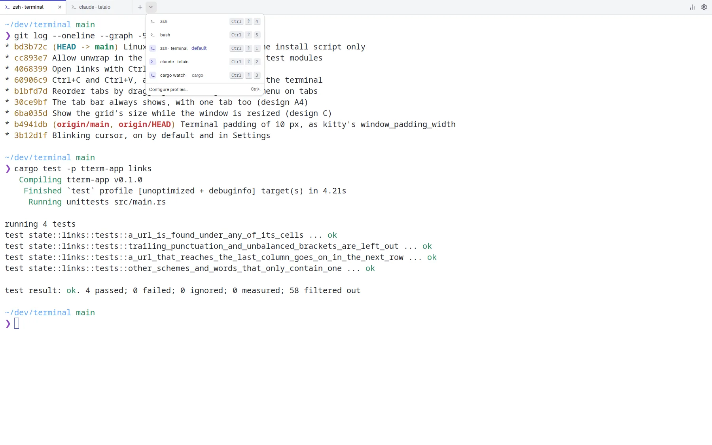
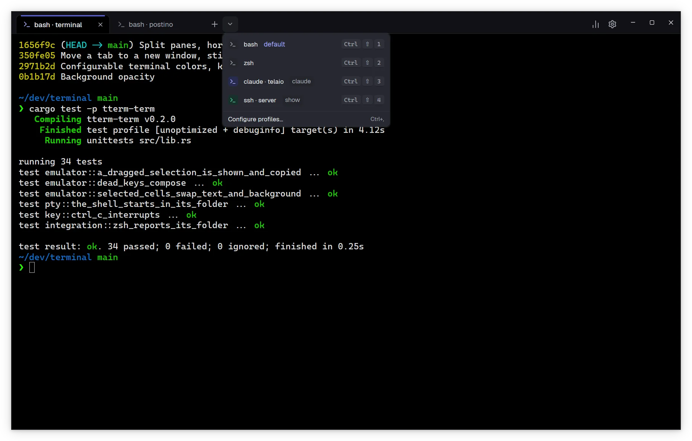

Tabs and profiles
The shells of your machine are found for you: bash, zsh and fish, PowerShell and the Command Prompt, and every WSL distribution. Add your own profiles with a folder, a command to start with, a color and a shortcut.
- A new tab with Ctrl Shift T, in the folder of the one you are in
- Each profile on Ctrl Shift 1 to 9, or picked from the keyboard
- Drag tabs to reorder them, right click to close many at once

